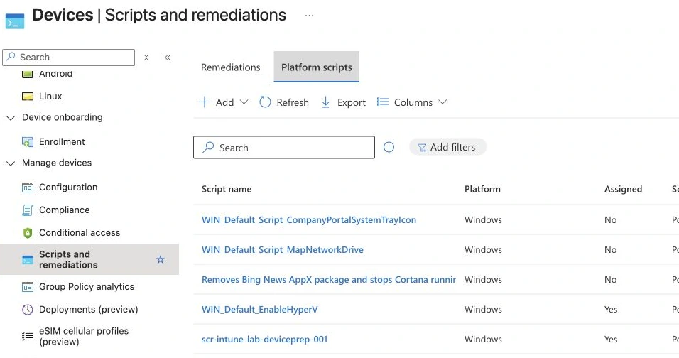
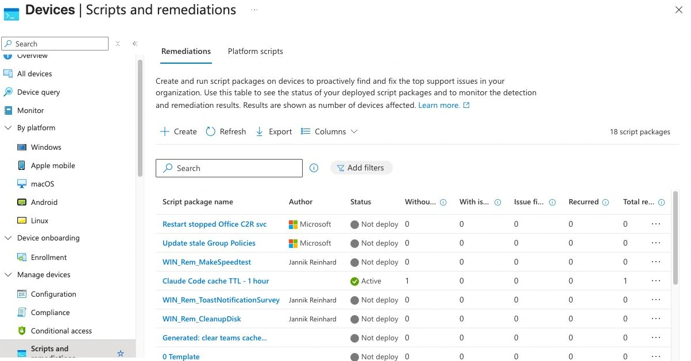

Intune 2610 Push for Scripts: Check Delivery Before Success
Start in Devices > Scripts and remediations and open Platform scripts. I checked this again in my Modern Device Management tenant: the platform scripts and the Remediations packages sit behind different tabs. Which one are you troubleshooting? I want to know that before I open a single log file.
Intune 2610 adds push notifications for Windows script changes. Iâll use a simple lab case: the script is assigned, one pilot device is online, and the other has been disconnected. The job is to find the first missing piece of evidence, from the policy change to the result on Windows. The portal views are real; I didnât trigger a new run.


Keep the script workload straight
The Intune management extension handles several workloads, including platform scripts and Remediations. A platform scriptâs execution conditions are not the same as a scheduled detection/remediation package. Microsoft documents platform-script run behavior separately. Platform script execution


Actual Scripts and remediations view, 2 November 2026. I inspected the existing packages; I did not deploy, edit or run one for this article.
For the pilot, record which workload you are testing, the object identifier, script version or file hash, assignments and execution context. Check user versus system context, signature settings and PowerShell architecture before blaming delivery.
Keep custom compliance separate. Its discovery-script behavior has its own schedule; Microsoft documents an eight-hour cycle and says push cannot force those custom compliance scripts on demand. Do not extend a Windows-script delivery announcement to every script-driven feature. Custom compliance behavior
My Intune management-channel reference helps identify the responsible channel. Use the current synchronization behavior below when validating this release.
Correlate the four stages

Where I would stop and investigate
- I can see the assignment, but nothing new on the device. Compare the pilot device with the target group, then check its last contact and notification path. No matching receipt means it is too early to debug the script body.
- The notification arrived, but execution is missing. Check the actual policy identifier and whether the client retrieved that version. A notification can be present while the relevant workload still hasnât reached the executor.
- The executor finished. Save the timestamp, context and exit information. Then read the result the script was supposed to leave behind. A zero exit code tells me what the script returned, not whether the result is still present.
- Only the online device succeeded. Keep the offline device in the report as pending or unknown. On its next connection, compare the version and time again instead of including it in the completed count.
Use a harmless synthetic marker in a dedicated pilot script if a new execution test is authorized. Give each version a unique marker so an old run cannot be mistaken for the new one. Keep the marker out of business configuration.
If the script is already idempotent, verify that repeating it leaves the same desired state. Faster refresh makes accidental repeated work more visible; it does not fix a non-idempotent implementation.
Read the relevant IME logs
The documented log directory is C:\ProgramData\Microsoft\IntuneManagementExtension\Logs. Relevant files include the main IME log, AgentExecutor.log, HealthScripts.log for Remediations and NotificationInfra.log for real-time notifications. Use their timestamps and workload identifiers together. IME operation and log reference
I would first confirm that the files are current, then inspect the relevant time range. A log copied last week cannot explain todayâs push behavior. Preserve rotated files if they contain the beginning of the test.
For a script that changes an application setting, perform a separate read of that setting under the intended user or system context. A return code of zero only tells you the script reported successful execution. A script can return zero after skipping a required action or modifying a different userâs profile.
Do not paste a complete endpoint log into a public issue or an AI prompt by default. Extract the minimum permitted evidence and remove identifiers that are not needed for the investigation.
A simple worksheet for the support engineer needs only one line per device and change: script version, assignment time, client receipt, execution time and observed result. Keep the time zone in the exported timestamps. On a disconnected device, the portal may display the previous result while the client has not seen the current change. Both records can be correct for their own dates. My CMTrace packaging guide shows how I keep a log reader at hand for this kind of work.
Add the new endpoint through the normal network process
Microsoft now lists *.trouter.communications.svc.cloud.microsoft for the relevant Windows push scenarios. The endpoint documentation specifies TCP 443 and applies the entry across regions. Review the complete Intune endpoint requirements as well; this is an addition, not a replacement allowlist. Intune network endpoints
Send the exact service requirement to the network team. Include the affected Windows pilot group, proxy path and a validation window. A firewall entry existing in a management console is not proof that the device process can establish the required connection.
Do not try to resolve the wildcard itself. Inspect the concrete destination used by a pilot device through approved network evidence. A TCP test to a real destination only establishes that connection layer; it does not validate application authentication, proxy behavior or script delivery.
param([Parameter(Mandatory)][string]$ObservedPushHost)
if (-not $ObservedPushHost.EndsWith(
'.trouter.communications.svc.cloud.microsoft',
[System.StringComparison]::OrdinalIgnoreCase)) {
throw 'Use a concrete push hostname observed on the approved pilot device.'
}
Resolve-DnsName -Name $ObservedPushHost
Test-NetConnection -ComputerName $ObservedPushHost -Port 443This read-only diagnostic example has no invented hostname and makes no firewall changes. Use the actual proxy and network diagnostics appropriate to your estate; a direct TCP probe can differ from the serviceâs authenticated proxy path.
Treat Sync as a request, then inspect its progress
The current IME documentation describes broader on-demand synchronization through Company Portal, Windows Settings and the admin-center Sync action, including MDM and IME-related workloads. Older shorthand that every admin-center Sync only reaches MDM is no longer a safe generalization. Current synchronization behavior
That still does not mean every assigned script immediately executes again. Keep the workloadâs run rules and current applicability in the test. Inspect device sync status and client evidence rather than repeatedly clicking Sync and counting the clicks as progress.
Include offline and degraded-network cases
Use the same pilot version in these scenarios:
- Online device on the normal corporate path.
- Online device through the approved proxy or remote network path.
- Device offline when the change is made, then reconnected.
- Device with an unhealthy or stopped IME, investigated without changing the script.
- Script that starts but reports a controlled failure.
Record time to receipt, start, finish, verified state and portal reporting separately. An offline device cannot be rescued by a faster notification channel while it remains offline. Report it as pending or unverified rather than silently removing it from the success denominator.
For a rollout decision, compare those timings with a baseline under equivalent conditions. I have not measured a fleet-wide improvement here. The useful immediate work is to validate the new network requirement and make the existing troubleshooting evidence precise enough to distinguish delayed delivery from failed execution.